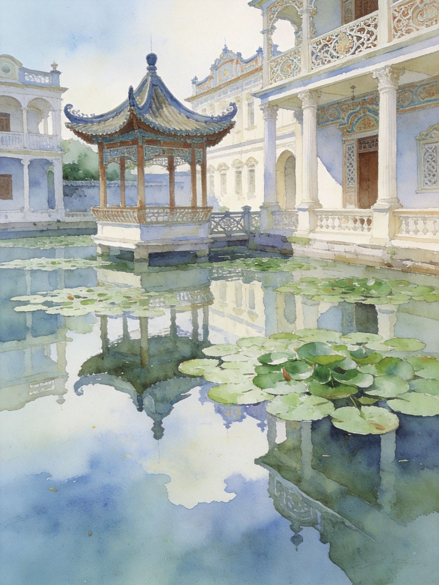
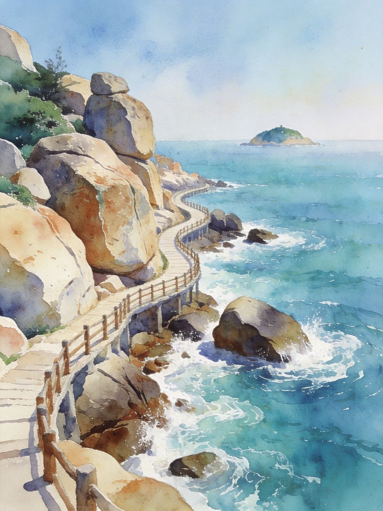

一座座中西合璧的碉楼立在金色稻田里，是《让子弹飞》的取景地，也是中国首个华侨文化世界文化遗产。再加那琴半岛的碧海奇石，江门把"侨乡人文 + 南粤海景"一次给足。
开平碉楼：世界文化遗产 国家5A · 侨乡人文开平碉楼是清末民初旅居海外的江门华侨回乡建造的居住+防御性建筑，融合中西建筑风格：塔楼高耸、碉身上开有射击孔与卷拱，内部则中西合璧。千余座碉楼散落在开平的稻田、村落之间，是**中国首个以华侨文化为主题的世世界级文化遗产**，《国家地理》曾列为"一生必去的中国50个最美地方"。
看什么：自力村碉楼群（《让子弹飞》取景地）、立园（中西合璧园林）、马降龙（碉楼与竹林村落）。再加那琴半岛看海、赤坎古镇逛侨乡老街区。
适合：人文/摄影爱好者、亲子研学、想一天看世界遗产+海边休闲的广东短途客。


碉楼与茂密竹林村落，人与自然和谐典范。
百年骑楼老街区，华侨电影风情，餐饮热闹。
江门海岛，沙滩海浪，适合海岛度假。
景自力村碉楼群 → 立园 → 马降龙 → 宿赤坎/开平
景那琴半岛地质海洋公园看海 → 赤坎古镇午市 → 返程
景自力村 → 立园 → 宿开平市区
景马降龙 → 赤坎古镇 → 夜游古城/骑楼
景那琴半岛看海 → 返程（或加选江门市区/圭峰山）
高铁：到"开平南站"/"江门站"，转公交/打车前往碉楼区；广深高铁直达江门约1小时。
自驾：广州/珠三角出发约1.5-2小时到开平，中山江门高速便利，是珠三角周末自驾热门。
那琴半岛：位于台山市那琴乡，离开平约1.5小时车程，一般自驾/包车前往。
景区之间：自力村、立园、马降龙相距不远但分散，自驾或包车最顺，也可乘景区直通车/拼车。
建议节奏：一天看碉楼三大点较从容；想再加那琴半岛则分两天。
提示：春秋稻田金黄/新绿时碉楼最出片，夏末秋初与春日最佳。
新会陈皮宴、台山黄鳝饭、外海面，地道侨乡味。
豆腐角、马冈鹅、水步菜干，山区农家风味。
那琴/台山靠海，海鲜现捞现做，明代大厨海鲜。